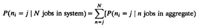
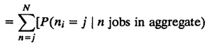
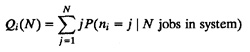
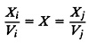
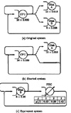
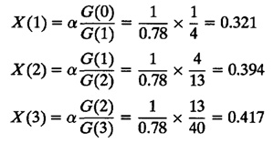
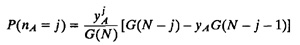
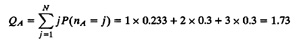

| Previous | Table of Contents | Next |
The statistics for service centers in the aggregate subnetwork are obtained using conditional probabilities as follows:

× P(n jobs in aggregate | N jobs in system)]

× P(n jobs in FEC | N jobs in system)]


Ri = QiXi
Ui = XiSi = XDi
Example 36.2 Consider the central server model of Examples 35.1, 35.3, and 35.4. Let us analyze this model using hierarchical techniques and verify that we obtain the same results. The model, shown again in Figure 36.4a, represents a batch computer system consisting of a processor and two disks.
The degree of multiprogramming is 3.
The service times are
SCPU = 0.039, SA = 0.18, SB = 0.26

FIGURE 36.4 Hierarchical decomposition example.The visit ratios are
VCPU = 13 + 6 + 1= 20, VA = 13, VB = 6
Total service demands are
DCPU = 20 × 0.039 = 0.78
DA = 13 × 0.18 = 2.34
DB = 6 × 0.26 = 1.56
Assuming that we are interested in studying several alternatives for disk B, we choose disk B as the designated subnetwork, set its service time to zero, and obtain the shorted model shown in Figure 36.4b. Although this shorted model can be easily solved using MVA, we will use a convolution algorithm instead so that we can study the distributions of queue lengths also.
TABLE 36.1 Computing G(N) for the Shorted Model of Example 36.2
n yCPU = 1 yA = 3
0 1 1 1 1 4 2 1 13 3 1 40
For the scaling factor, we arbitrarily choose α = 1/0.78. This results in yCPU = 1 and YA = 3. The computation of the normalizing constant G(N) is shown in Table 36.1.
From the table, we see that G(0) = 1, G(1) = 4, G(2) = 13, and G(3) = 40. The system throughputs for various degrees of multiprogramming are

The probability of j jobs at disk A when there are n jobs in the shorted model is given by

The probabilities so computed are listed in Table 36.2.
We replace the aggregate subnetwork by an FEC and obtain an equivalent network, as shown in Figure 36.4c. It consists of just two service centers: disk B and an FEC. The first service center has a service time of SB = 0.26 second and a visit ratio of VB = 6. The FEC is a load-dependent service center with a visit ratio of 1 and service rates identical to the throughputs of the shorted model. That is,
µ(1) = 0.321, µ(2) = 0.394, µ(3) = 0.417
TABLE 36.2 Queue Length Probabilities for Disk A of Example 36.2
nA
n 0 1 2 3
1 0.250 0.750 2 0.077 0.231 0.692 3 0.025 0.075 0.225 0.675
We have already solved this model in Example 36.1. The following results obtained for disk B (since it is in the designated subnetwork) and the system as a whole are still valid:
- 1. The system throughput is 0.21, 0.31, and 0.36 job/second with one, two, and three jobs in the system, respectively.
- 2. The system response times are 4, 68, 6.54, and 8.42 seconds for N = 1, 2, 3, respectively.
- 3. The mean queue length for disk B with N = 3 is 0.91.
- 4. The mean response time for disk B with N = 3 is 0.43 second.
- 5. The utilization of disk B with N = 3 is 0.562.
As a check, we verify that these are identical to those obtained for the original network in Example 35.4 without decomposition.
Obtaining performance statistics for queues in the aggregate subnetwork requires further work.
From Example 36.1, we know that when the degree of multiprogramming N is 3, the probabilities of zero, one, two, and three jobs at the FEC are 0.09, 0.18, 0.29, and 0.44, respectively. These values along with those listed in Table 36.2 allow us to compute the queue length distribution for disk A as follows:
P(nA = 0 | N = 3) = P(nA = 0 | n = 0)P(n = 0 | N = 3)
+P(nA = 0 | n = 1)P(n = 1 | N = 3)
+P(n=0|nA = 2)P(n = 2 | N = 3)
+P(nA = 0 | n = 3)P(n = 3 | N = 3)
= 1 × 0.09 + 0.250 × 0.18 + 0.077 × 0.29 + 0.025 × 0.44
= 0.166
Similarly,
- P(nA = 1 | N = 3) = 0.750 × 0.18 + 0.231 × 0.29 + 0.075 × 0.44 = 0.233
- P(nA = 2 | N = 3) = 0.692 × 0.29 + 0.225 × 0.44 = 0.3
- P(nA = 3 | N = 3) = 0.675 × 0.44 = 0.3
Once again, we check that these probabilities are the same as those obtained in Example 35.4.
The mean number of jobs at disk A can be computed from the queue length distribution:

Similarly, QCPU can be shown to be 0.36 job.
The CPU and disk A throughputs using the forced flow law are
XCPU = XVCPU = 0.36 × 20 = 7.2 jobs/second
XA = XVA = 0.36 × 13 = 4.68 jobs/second
The CPU and disk A utilizations using the utilization law are
UCPU = XDCPU = 0.36 × 0.78 = 0.281
UA = XDA = 0.36 × 2.34 = 0.843
The CPU and disk A response times using Little’s law are
RCPU = QCPU/XCPU = 0.36/7.2 = 0.05 second
RA = QA/XA = 1.73/4.68 = 0.37 second
Before leaving this example, we must remind the reader of the necessity of using the correct visit ratios VB = 6 and VFEC = 1. This is also the reason for the extra link around disk B in Figure 36.4c. Without this link, it is impossible for a job to make six visits to disk B while making just one visit to the FEC.
| Previous | Table of Contents | Next |
){kind=link}
){kind=link}